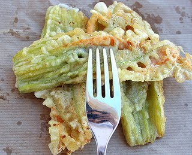

One of the pleasures of visiting Italy is to be delighted by its food and…flowers. This time I was lucky enough to find the fiori di zucca at the grocery store, so I bought them with the intent to make one of the easiest and yet most delicious recipes of the Italian cuisine. Ingredients: -about 15 zucchine blossoms (note: the correct word is zucchine not zucchini!) -4 tbsp flour -About 1/2 cup water or milk -1 egg (optional) -frying oil -salt Remove the pistils and gently wash the flowers inside and outside. Pat them dry. Prepare the batter by mixing the water (or milk), the flour, a little salt and the egg, if you decide to include it in your recipe. Make sure the batter is smooth and creamy. Dip the fiori di zucca into the batter and then fry them in very hot oil. Drain them on absorbent paper and lightly salt them. Serve them hot. If you want to combine some language and cooking practice, we recommend Francesca Valerio's blog on Italian recipes. Buon Appetito!